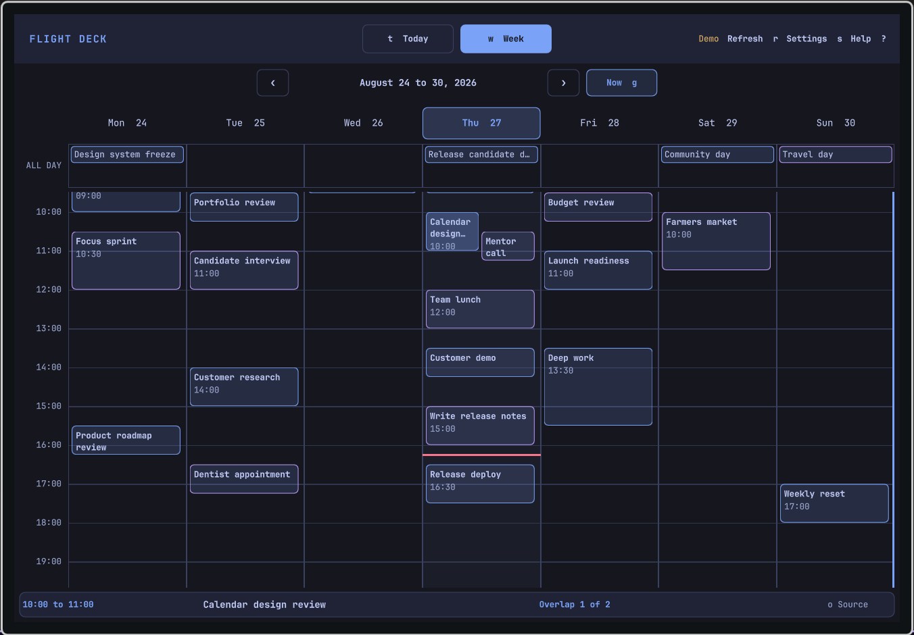

Workflow
Switch between Today and Week, move through events from the keyboard, and open a meeting or its source calendar without hunting through tabs.
Public preview for Omarchy
See Google and Outlook events together, move through the week from the keyboard, and open the meeting or source event from the bar.

Today and Week
Today keeps the next event and its details in view. Week shows all-day events, overlapping meetings, and current-time context across both providers.
Switch between Today and Week, move through events from the keyboard, and open a meeting or its source calendar without hunting through tabs.
Flight Deck requests read-only calendar access, accepts only HTTPS event links, and exposes no command that creates, edits, or deletes a provider event.
OAuth tokens stay in Secret Service, while normalized events and provider health stay in a private local SQLite cache.
A deliberate boundary
Flight Deck combines provider calendars locally and keeps the last successful local cache available when a network refresh fails. The interface marks that cache as stale until a later refresh succeeds.
See the complete data lifecycleInstall the public preview
Run the Omarchy plugin command, then try the built-in offline dataset or connect a provider after completing the registration prerequisite.
omarchy plugin add https://github.com/joryeugene/omarchy-calendar.git --enable